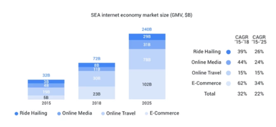
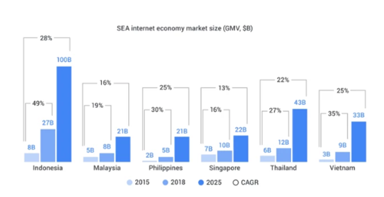
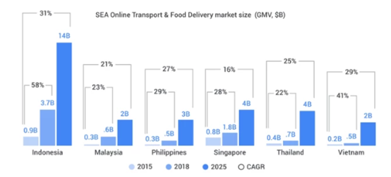
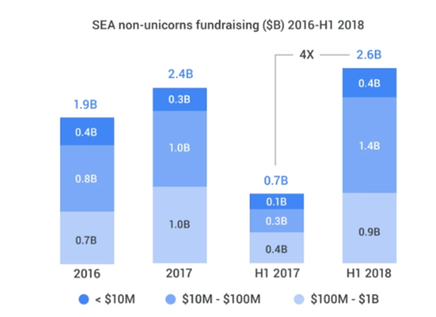

曾几何时，“夹在”中国和印度之间的东南亚市场都处于比较尴尬的位置。不过现在，随着电商和移动科技的进步，东南亚正在发挥巨大的增长潜力。根据谷歌最近发布的“e-Conomy SEA”报告显示，东南亚地区的数字经济预计将在未来七年时间里增长三倍。
这份研究报告是由谷歌和新加坡主权投资基金淡马锡合作编著，可以说是目前分析东南亚市场最为全面的一份科技研究报告了。该报告指出，市场规模高达2000亿美元的东南亚数字经济将在2025年达到“拐点”。
目前，东南亚六个国家拥有3.5亿互联网用户，这一数字超过了整个美国的人口总数。根据最新数据显示，今年东南亚互联网经济总量将会突破720亿美元，远高于2017年的500亿美元和2015年的191亿美元。如果按照行业类型的话，这720亿美元大致可以按照如下划分：
l 线上旅游出行（300亿美元）
l 电子商务（230亿美元）
l 线上媒体（110亿美元）
l 共享出行（80亿美元）
预计在2025年之前，这四个数字经济子类别并不会发生太大变化。
印度尼西亚按照人口计算是世界第四大国家，预计到2025年，该国数字经济规模将会在2025年达到1000亿美元。此外，泰国（430亿美元）和越南（330亿美元）的数字经济也会有强劲的增长预期。根据相关数据显示，自2015年以来，印度尼西亚和越南数字经济增长率已经翻了三番。
在今年谷歌和淡马锡合著的东南亚数字经济报告中，重点分析了共享出行行业。今年年初，Grab收购了Uber东南亚市场业务，可见本地共享出行市场极具吸引力。据悉，由于市场增长迅速，Grab最大的竞争对手Go-Jek正在尝试扩大印度尼西亚基地。2015年，Go-Jek的日均乘车用户量约为150万，而今年已经增长到了800万；月均乘车用户量也从2015年800万增长到了3500万。
与传统核心运输服务行业相比，食品配送服务收入增长也非常快，这对于Grab和Go-Jek来说也是一个好兆头，因为这两家共享出行公司已经开始布局按需服务了。新加坡是东南亚六国中人口数量最少的一个国家，他们拥有550万人，但新加坡在东南亚共享出行的市场份额却相当大——这一趋势也将会一直延期到2025年。
此外，报告中还提到了东南亚市场中初创公司的融资情况。在过去的四年时间里，东南亚地区的“独角兽”公司吸引的融资金额已经从160亿美元增长到了240亿美元，其中仅Grab就获得了60亿美元的投资。
实际上，谷歌在每一期数字经济报告中都会强调融资水平的重要性，因为经济增长预期往往取决于必要的融资水平，也只有在获得足够的投资之后，东南亚创业生态系统才能被进一步推动。不过令人担忧的一件事是，大多数资金都流向了少数几家规模较大的初创公司。当然，东南亚创投圈整体融资情况还是比较乐观的，比如在2018年上半年，“非独角兽”初创公司募集到的资金总额几乎超过了2017年全年。
该报告中写道：
“东南亚地区有超过2000家互联网初创公司获得了投资，对于那些估值不到10亿美元的初创公司来说，过去三年的融资总金额接近70亿美元。其中，最具活力的是公司估值在1000万至1亿美元的初创公司，他们是互联网经济的基石，并且在2018年上半年募集到了14亿美元的资金，已经大大超过了2017年全年募集到的10亿美元融资总金额。”（编译/Tino）